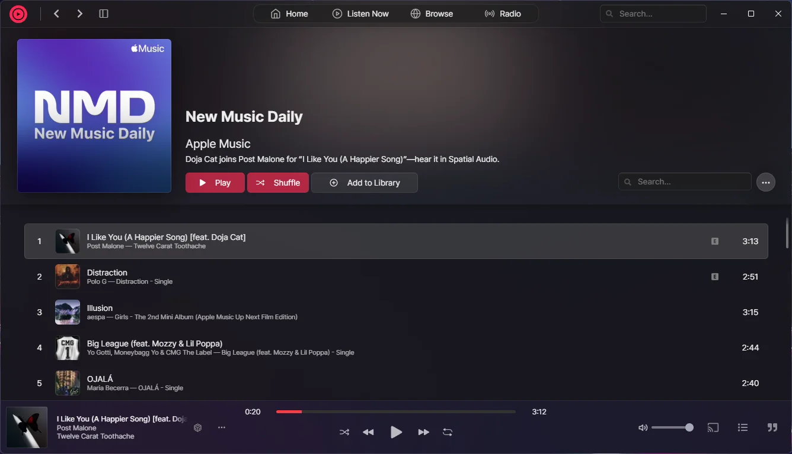

Cider
Main process, plugin system and every release
I started with the configuration system in Apple-Music-Electron, rewrote Cider's main process in TypeScript with a plugin system, and owned releases: CircleCI, Flatpak and the AUR packages.